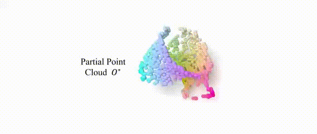
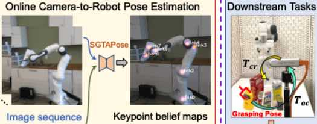

|
Jiyao Zhang I am a first-year Ph.D. candidate in the Center on Frontiers of Computing Studies (CFCS) at the School of Computer Science, Peking University, advised by Prof. Hao Dong. I'm also a research intern at Beijing Academy of Artificial Intelligence (BAAI). |
{kind=link}
ResearchMy research interests lie in 3D computer vision and robotics. Much of my research is about embodied perception and manipulation, with a focus on enabling robots to autonomously perceive, understand, and interact with the world. |
|  |
GenPose: Generative Category-level Object Pose Estimation via Diffusion Models
Jiyao Zhang*, Mingdong Wu*, Hao Dong† Arxiv 2023 Arxiv / Project Page / Code / Bibtex We explore a pure generative approach to tackle the multi-hypothesis issue in 6D Category-level Object Pose Estimation. The key idea is to generate pose candidates using a score-based diffusion model and aggregate poses using an energy-based diffusion model. By aggregating the remaining candidates, we can obtain a robust and high-quality output pose. |
|  |
SGTAPose: Robot Structure Prior Guided Temporal Attention for Camera-to-Robot Pose Estimation from Image Sequence
Yang Tian*, Jiyao Zhang*, Zekai Yin, Hao Dong† Conference on Computer Vision and Pattern Recognition (CVPR) 2023 Paper / Project Page / Code / Bibtex We propose Structure Prior Guided Temporal Attention for online Camera-to-Robot Pose estimation (SGTAPose) from successive frames of an image sequence. |

|
Domain Randomization-Enhanced Depth Simulation and Restoration for Perceiving and Grasping Specular and Transparent Objects
Qiyu Dai*, Jiyao Zhang*, Qiwei Li, Tianhao Wu, Hao Dong, Ziyuan Liu, Ping Tan, He Wang† European Conference on Computer Vision (ECCV) 2022 Paper / Project Page / Code / Bibtex We propose Domain Randomization Enhanced Depth Simulation (DREDS) approach to simulate an active stereo depth system using physically based rendering and demonstrate that the proposed DREDS bridges the sim-to-real domain gap. |
|
Template stolen from Jon Barron |